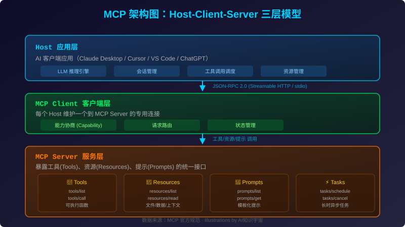
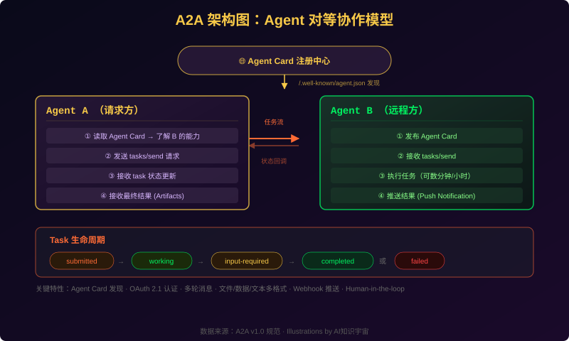
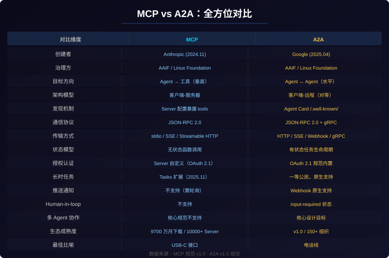
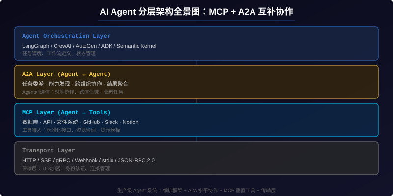
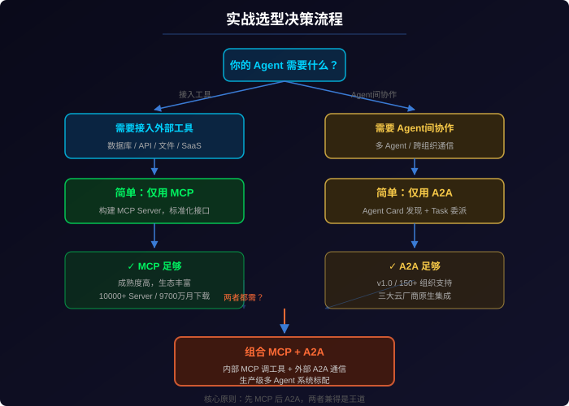

MCP vs A2A：重塑 AI Agent 生态的两大协议深度解析 - AI知识宇宙 - 用AI采集，用AI生成
数据说明：本文数据采集于 2026 年 5 月 24 日，涵盖 MCP 官方规范、A2A v1.0 规范、Linux Foundation AAIF 公告、各媒体报道及开发者社区讨论。MCP SDK 下载量数据来自 Anthropic 官方（2026 年 3 月 25 日里程碑），A2A 组织支持数据来自 A2A 技术指导委员会公告。
引言：从「孤岛」到「网络」
2026 年的 AI 开发者面临一个前所未有的局面：Agent 多如牛毛，但彼此互不相通。
你的 Claude Agent 可以调用任何 MCP 工具——查询数据库、操作 GitHub、发送 Slack 消息——但它无法告诉另一个 Agent「帮我查一下这个 PR 的 CI 状态」。反过来，那个负责 CI 监控的 Agent 即使发现了问题，也不知道如何把结果传回来。
这不是技术的局限，而是协议层的缺失。
2024 年 11 月，Anthropic 开源了 MCP（Model Context Protocol），为 AI Agent 接入工具提供了「USB-C 标准」。2025 年 4 月，Google 发布了 A2A（Agent-to-Agent Protocol），为 Agent 之间互相通信定义了「电话线标准」。到 2026 年 5 月，这两个协议均已进入成熟期：MCP 月 SDK 下载量突破 9700 万，A2A v1.0 在今年 3 月正式发布，二者同属 Linux Foundation 旗下的 Agentic AI Foundation（AAIF） 治理。
本文将从架构原理、技术特性、生态版图到实战选型，带你一次性吃透这两个重塑 AI Agent 生态的核心协议。
一、MCP：AI 工具连接的「USB-C」标准
1.1 诞生背景
在 MCP 出现之前，每个 AI 应用连接外部工具的方式都是「各自为政」：Claude 有自己的工具调用格式，GPT 用 Function Calling，Gemini 有自家 Tool API。同一个数据库要接入三个 AI 平台，得写三套不同的适配代码。
MCP 要解决的问题很简单也很根本：定义一套通用的协议，让任何 AI 模型都能以标准方式调用任何外部工具。
2024 年 11 月，Anthropic 悄然开源了 MCP。17 个月后的今天，这个「实验性协议」已成为 AI 基础设施史上采用速度最快的标准之一。
1.2 核心架构
MCP 采用 Host-Client-Server 三层模型：

| 层级 | 角色 | 职责 |
|---|---|---|
| Host | AI 应用（Claude Desktop / Cursor / VS Code / ChatGPT） | 运行 LLM 推理、管理会话、调度工具调用 |
| Client | MCP 客户端 | 每个 Host 维护一个到 MCP Server 的专用连接，负责能力协商和请求路由 |
| Server | MCP 服务端 | 暴露工具（Tools）、资源（Resources）、提示（Prompts）、任务（Tasks） |
MCP 的核心原语包括：
- Tools：可被 AI 调用的函数，通过
tools/list发现、tools/call执行 - Resources：结构化的数据/文件，通过
resources/list发现、resources/read读取 - Prompts：模板化的提示词，通过
prompts/list发现、prompts/get获取 - Tasks（2025 年 11 月新增）：长时异步任务，支持
tasks/schedule和tasks/cancel
1.3 关键数据
| 指标 | 数据 |
|---|---|
| 月 SDK 下载量 | 9700 万+（2026 年 3 月 25 日） |
| 公开 MCP Server | 10000+ |
| 活跃日均连接 | 1500-2000 万 |
| 客户端生态 | 300+（Claude / ChatGPT / Cursor / Copilot / VS Code / Replit / Zed / Codeium 等） |
| 世界 500 强采用率 | 28% |
| 治理方 | AAIF / Linux Foundation |
| 创建者 | Anthropic（2024 年 11 月） |
| 传输协议 | JSON-RPC 2.0（stdio / SSE / Streamable HTTP） |
MCP 的爆发式增长得益于 2025 年的多个关键节点：
| 时间 | 事件 | 月下载量 |
|---|---|---|
| 2024 年 11 月 | MCP 发布 | ~10 万 |
| 2025 年 4 月 | OpenAI 原生支持 MCP | 2200 万 |
| 2025 年 7 月 | Microsoft Copilot Studio 集成 | 4500 万 |
| 2025 年 11 月 | AWS 支持 MCP | 6800 万 |
| 2025 年 12 月 | Anthropic 将 MCP 捐赠给 AAIF | ~4000 万（过渡期） |
| 2026 年 1 月 | 10000+ 公开 Server | ~6500 万 |
| 2026 年 3 月 25 日 | 97M 里程碑 | 9700 万+ |
详细数据来源：AgentMarketCap 报道
1.4 生态版图
MCP 的生态已被所有主流 AI 厂商接纳：
- OpenAI：ChatGPT 和 API 平台原生支持 MCP（2025 年 4 月）
- Microsoft：Copilot Studio、VS Code 深度集成 MCP
- Google：Gemini API 支持 MCP Server 调用
- AWS：Bedrock Agent 支持 MCP 工具接入
- Anthropic：Claude Desktop / Code 原生 MCP
它不仅是协议，更是生态。截至 2026 年 5 月，MCP 的 10000+ 公开 Server 覆盖了几乎所有主流服务：
| 类别 | 代表 Server |
|---|---|
| 数据库 | PostgreSQL / MySQL / SQLite / MongoDB / Redis / Snowflake |
| 开发工具 | GitHub / GitLab / Linear / Jira / Sentry |
| 云服务 | AWS / GCP / Azure / Cloudflare |
| 办公协作 | Slack / Notion / Google Drive / Confluence |
| AI 服务 | OpenAI / Anthropic / Hugging Face / Replicate |
| 文件系统 | 本地文件 / S3 / GCS |
1.5 MCP 代码示例
一个 MCP Server 的实现极为简洁。以下是一个暴露 GitHub 仓库统计工具的 Python 示例（基于 FastMCP）：
from fastmcp import FastMCP
mcp = FastMCP("GitHub Analytics")
@mcp.tool()
async def get_repo_stats(owner: str, repo: str) -> str:
"""获取 GitHub 仓库的关键统计信息"""
# 调用 GitHub API 获取数据
return f"Stars: 15000, Forks: 3200, License: MIT, Language: Python"
@mcp.resource("repo://README")
async def get_readme() -> str:
"""读取仓库的 README 文件内容"""
return "# GitHub Analytics Tool\n\n..."
if __name__ == "__main__":
mcp.run()
构建完成后，任何 MCP 兼容的 AI 客户端（Claude、Cursor、ChatGPT）都可以直接发现并调用这些工具——无需任何客户端侧代码修改。
二、A2A：Agent 互通的「电话线」标准
2.1 诞生背景
当 MCP 解决了 Agent 与工具的连接问题后，一个更深层的需求浮出水面：Agent 之间怎么通信？
如果 Agent A（负责需求分析）需要 Agent B（负责代码实现）来完成一项任务，它们该如何发现彼此、如何描述能力、如何委派任务、如何跟踪进度？MCP 不适合做这个——它假设通信的一端是「工具」（无状态、响应式），而不是「另一个 Agent」（有状态、自主）。
Google 在 2025 年 4 月推出了 A2A 来解决这个鸿沟。初始获得了 50+ 企业合作伙伴的支持。一年后，这个数字增长到了 150+ 组织，IBM 的 ACP 协议并入了 A2A，三大云厂商全部原生集成。
2.2 核心架构
A2A 采用 Client-Remote（对等） 架构，与 MCP 的 Client-Server 有本质区别：

| 组件 | 说明 |
|---|---|
| Agent Card | JSON 格式的身份/能力声明，发布于 /.well-known/agent.json |
| Task | 有状态的工作单元，带有完整的生命周期 |
| Message | 多方之间的多格式内容交换（文本/文件/结构化数据） |
| Artifact | 任务执行产出的结果文件 |
A2A 的核心交互流程：
- 发现：Client Agent 读取 Remote Agent 的 Agent Card，了解其能力、技能和认证方式
- 委派：Client Agent 发送
tasks/send请求，描述需要完成的任务 - 执行：Remote Agent 自主执行任务，可能持续数分钟到数小时
- 通信：执行过程中可发送状态更新、请求澄清（
input-required状态）、流式返回部分结果 - 完成：任务标记为
completed或failed，通过 Artifacts 返回最终产出
一个 Agent Card 的示例：
{
"name": "Code Review Agent",
"description": "专精于代码审查和安全分析的 AI Agent",
"url": "https://api.example.com/a2a/v1",
"version": "1.0.0",
"capabilities": {
"skills": [
{
"id": "code-review",
"name": "代码审查",
"description": "对 PR 进行全面的代码审查，包括安全分析"
},
{
"id": "security-audit",
"name": "安全审计",
"description": "检测代码中的安全漏洞和不良实践"
}
]
},
"authentication": {
"schemes": ["oauth2", "bearer"]
}
}
2.3 v1.0 里程碑
2026 年 3 月 12 日，A2A 正式发布 v1.0。这被广泛认为是 Agent 通信协议走向生产环境的标志性事件。
v1.0 相对于 v0.3 的关键变化：
| 特性 | v0.3 | v1.0 |
|---|---|---|
| OAuth | OAuth 2.0（含隐式/密码流） | OAuth 2.1（仅授权码 PKCE + 设备码） |
| 多租户 | 不支持 | 原生 tenant 字段隔离 |
| 传输绑定 | HTTP/JSON | HTTP/JSON + JSON-RPC 2.0 + gRPC |
| Agent Card | 简单声明 | 可同时声明对多个协议版本的支持 |
| 安全 | 基础认证 | 签名 Agent Card + 双向 TLS |
| 授权管理 | 无 | TSC 8 公司共同治理 |
最新规范详情见 A2A v1.0 Specification。
2.4 生态版图
A2A 在一年内实现了惊人的跨越：
| 维度 | 2025 年 4 月（发布） | 2026 年 4 月 |
|---|---|---|
| 支持组织 | 50+ | 150+ |
| 版本 | 草案 | v1.0（生产稳定） |
| SDK 语言 | Python 仅 | Python / JavaScript / Java / Go / .NET |
| GitHub Stars | ~5000 | 22000+ |
| 云支持 | Google Cloud 仅 | AWS Bedrock + Azure AI Foundry + Google Cloud |
| 安全 | 基础认证 | OAuth 2.1 / 签名证书 / 双向 TLS |
| 治理 | Google 主导 | Linux Foundation（8 公司 TSC） |
| 竞品 | IBM ACP（独立） | ACP 合并入 A2A |
数据来源：Arun Baby - A2A at 150+ organizations
技术指导委员会成员：AWS、Cisco、Google、IBM Research、Microsoft、Salesforce、SAP、ServiceNow。
此外，A2A 的生态正在向支付领域延伸——Agent Payments Protocol（AP2） 基于 A2A 构建，已获得包括 Mastercard、PayPal、American Express 在内的 60+ 支付组织支持。
三、MCP vs A2A：全方位对比
二者不是竞争关系，但理解它们的差异至关重要：

3.1 核心哲学差异
MCP 问的是：「我需要什么？」 - 我要查数据库 → 找一个 MCP Server - 我要发 Slack 消息 → 找一个 MCP Server - 我要读文件 → 找一个 MCP Server - AI 是消费者，Server 是提供者
A2A 问的是：「谁能帮我？」 - 我负责分析需求 → 哪个 Agent 可以写代码？ - 我负责写代码 → 哪个 Agent 可以审查？ - 我负责审查 → 怎么把结果传回去？ - AI 是同事，另一个 AI 也是同事
3.2 最佳类比
- MCP = USB-C 接口：标准的、通用的、即插即用的工具连接方式。你知道接口长什么样，插上去就能用。
- A2A = 电话线：你通过它和另一个智能体（人/Agent）沟通，你告诉对方你要什么，对方自己决定怎么做。
正如 The Spawn 的一篇锐评所言：MCP vs A2A: Which Protocol Should You Ship?
判断的唯一标准：接口后面是工具，还是另一个会思考的 Agent？ 如果是工具 → MCP。如果是会思考的 Agent → A2A。
四、不是竞争，而是互补
4.1 分层架构全景
MCP 和 A2A 处在 AI Agent 系统栈的不同层次：

在实际的生产系统中，MCP 和 A2A 往往协同工作：
- MCP 层：每个 Agent 使用 MCP 连接自己的工具集（数据库、API、文件系统）
- A2A 层：Agent 之间通过 A2A 通信、委派任务、协调工作
4.2 经典实践场景
场景一：编排器模式（推荐架构）
编排器 Agent 通过 A2A 将任务委派给多个专家 Agent，每个专家 Agent 内部使用 MCP 调用工具：
┌─ 编排器 Agent ─────────────────────────────┐
│ 接收用户需求 → 分解任务 → A2A 委派 │
└──────────┬──────────┬──────────┬────────────┘
│ A2A │ A2A │ A2A
┌─────▼────┐ ┌───▼────┐ ┌──▼──────┐
│ 研究 Agent│ │ 编码 │ │ 测试 │
│ (MCP: 搜索│ │ Agent │ │ Agent │
│ 数据库) │ │(MCP: │ │(MCP: │
│ │ │ Git) │ │ CI API) │
└──────────┘ └────────┘ └─────────┘
场景二：跨企业 Agent 协作
A 公司的供应链 Agent 通过 A2A 与 B 公司的物流 Agent 通信：
A 公司 (内部 MCP 调 SAP / ERP) ⟷ A2A ⟷ B 公司 (内部 MCP 调 WMS / TMS)
4.3 是否可以在 MCP 上模拟 A2A？
技术上可以，但不推荐。如果你的 Agent 把自己暴露为一个 MCP Tool，其他 Agent 可以调用它。但：
- MCP Tools 是无状态的函数调用，没有任务生命周期
- MCP 没有 Agent 身份概念，无法进行能力发现
- MCP 没有标准的跨信任域认证机制
- MCP 没有 Human-in-the-loop 支持
用 MCP 做 Agent 通信就像用 USB-C 接口打电话——物理上能连通，但体验极差。
4.4 反之亦然：A2A 能替代 MCP 吗？
也不能。A2A 不定义工具调用接口。如果你有一个需要查询 PostgreSQL 的 Agent，用 A2A 没法告诉数据库「怎么查」。A2A 只说「我要查数据」，不管「用什么协议查」。
A2A 和 MCP 是正交的——一个管水平通信（Agent 之间），一个管垂直集成（Agent 到工具）。缺一个，系统就不完整。
五、AAIF：同一个基金会下的双协议
5.1 AAIF 的成立
2025 年 12 月，Linux Foundation 宣布成立 Agentic AI Foundation（AAIF），作为 MCP 和 A2A 的永久中立治理机构。
创始成员： - 白金级（有理事席）：Amazon、Bloomberg、Cloudflare、Google、Microsoft - 创始级：Anthropic、Block、OpenAI
这意味着 Anthropic（MCP 创建者）、Google（A2A 创建者）、OpenAI（曾被认为会推自己的协议）在同一个基金会下共同治理。协议之争已经结束，行业标准已经确立。
5.2 AAIF 的意义
- 跨厂商互信：三家竞争性基础模型公司 + 两家竞争性云厂商共同治理
- 路线图协调：MCP 和 A2A 的版本更新由同一技术委员会评审
- 企业信心：Linux Foundation 的中立背书消除了企业「选错边」的风险
正如 APIScout 的对比报告 所言：
Use both. MCP and A2A solve different problems. Google explicitly designed A2A to complement MCP, not replace it.
六、实战选型指南
6.1 决策流程

6.2 场景对照表
| 场景 | 推荐 | 原因 |
|---|---|---|
| 单 Agent 接入 PostgreSQL | MCP 即可 | 不需要 Agent 间通信 |
| 单 Agent 调用 GitHub/Slack | MCP 即可 | 工具调用场景 |
| 多 Agent 协作研究→写作→审核 | MCP + A2A | A2A 委派，各 Agent 用 MCP 调工具 |
| 跨企业 Agent 集成 | A2A | 跨信任域通信，标准认证机制 |
| 暴露内部系统给 AI | MCP Server | 标准化接入，即插即用 |
| 构建 Agent 市场/平台 | A2A + MCP | Agent Card 发现 + MCP 工具 |
| AI IDE 工具集成 | MCP | Cursor、VS Code、Zed 原生支持 |
6.3 学习路径建议
- 先学 MCP：更简单、更成熟、覆盖 80%+ 的使用场景
- 再学 A2A：当你真正需要多 Agent 协作时
- 两者兼得：生产级多 Agent 系统的标配选择
七、未来展望
7.1 MCP 2026 路线图
根据 MCP 官方 2026 路线图，接下来的重点方向包括：
- Streamable HTTP 标准化：使 MCP Server 可作为无状态 HTTP 端点水平扩展
- OAuth 2.1 内置支持：企业级身份认证集成（Q2 2026）
.well-known元数据发现：无需实时连接即可发现 Server 能力- Agent-to-Agent 通信扩展：MCP 正在填补自身在 Agent 间通信的空白
7.2 A2A 2026 路线图
- 多语言 SDK 完善：更多语言支持和稳定版发布
- Agent Payments Protocol (AP2)：基于 A2A 的 Agent 支付协议
- 企业级网关产品：Cloudflare、Okta 等厂商的 A2A 网关
7.3 Pilot：Session 层的补充
值得关注的是，Pilot 协议正在填补 Agent 网络栈中的 Session 层空白。如果说 MCP 是 L7 工具层、A2A 是 L7 协调层，那么 Pilot 是 L5 Session 层——为 Agent 提供寻址、加密身份认证和对等网络。
MCP 给了 Agent 工具，A2A 给了 Agent 同伴，Pilot 给了 Agent 网络。
来源：DEV Community - MCP is a Tool Layer, But What's Underneath It?
7.4 2027 展望
- MCP 和 A2A 将成为 AI Agent 系统的默认基础设施，就像 HTTP/TCP 之于 Web
- Agent 不再需要手动配置工具连接——MCP Server 市场将成为新的「包管理器」
- 企业 MCP Gateway 产品将出现，统一认证、限流、审计 Agent 工具调用
- A2A 跨企业 Agent 协作将从实验走向生产
八、总结
| 维度 | MCP | A2A |
|---|---|---|
| 一句话 | Agent 怎么用工具 | Agent 怎么找同伴 |
| 方向 | 垂直（Agent → 工具） | 水平（Agent ↔ Agent） |
| 成熟度 | 生产就绪（9700 万月下载） | v1.0 发布，快速增长 |
| 治理 | AAIF / Linux Foundation | AAIF / Linux Foundation |
| 学哪个 | 先学 MCP（更成熟更简单） | 再加 A2A（需要时） |
最终的建议很简单：
构建任何 AI Agent 系统时，先上 MCP。当你的一个 Agent 需要叫另一个 Agent 帮忙时，再加 A2A。两者兼得，方为王道。
参考文献
- MCP 官方网站 & 规范 — 2026-05-24
- A2A Protocol v1.0 Specification — 2026-03-12
- MCP Hits 97M Monthly Downloads - AgentMarketCap — 2026-04-14
- A2A at 150+ Organizations - Arun Baby — 2026-04-18
- MCP vs A2A: Which Agent Protocol Wins in 2026? - APIScout — 2026-03-15
- MCP vs A2A: How Do These Protocols Actually Differ? - DigitalOcean — 2026-04-28
- A2A vs MCP Protocol Comparison - ToolRoute — 2026-04-15
- MCP vs A2A: Comparison Guide (2026) - Pickaxe — 2026-04-13
- MCP vs A2A: When to Use Each Protocol - Apigene — 2026-03-17
- MCP vs A2A: Which Protocol to Ship - The Spawn — 2026-04-15
- MCP vs A2A: Two Protocols Shaping AI Agent Ecosystem (2026) - DevTk.AI — 2026-03-01
- MCP vs A2A: Agent Protocols Compared (2026) - TokenMix — 2026-04-25
- Google A2A Announcement - Google Developers Blog — 2025-04-09
- MCP TypeScript SDK - GitHub — 2026-05-21
- A2A Protocol - GitHub — 2026-04-06
- MCP: The Complete Developer Guide (2026) - DEV Community — 2026-05-22
- MCP is a Tool Layer, But What's Underneath It? - DEV Community / Pilot — 2026-05-13
- MCP Hits 97M Installs - Happycapy Guide — 2026-03-25
- MCP at 97M Downloads - MegaOne AI — 2026-04-06
- MCP 成为 AI Agent 标准 - 36氪 — 2026-05-22
本文由 AI 辅助撰写，数据来源于各官方公告和权威媒体报道。如发现数据需要更新，欢迎联系我们。
推荐搭配装备
善其事，利其器。以下硬件能最大化你的AI体验👇
🔗 通过以上链接购买可支持本站持续运营 🙏